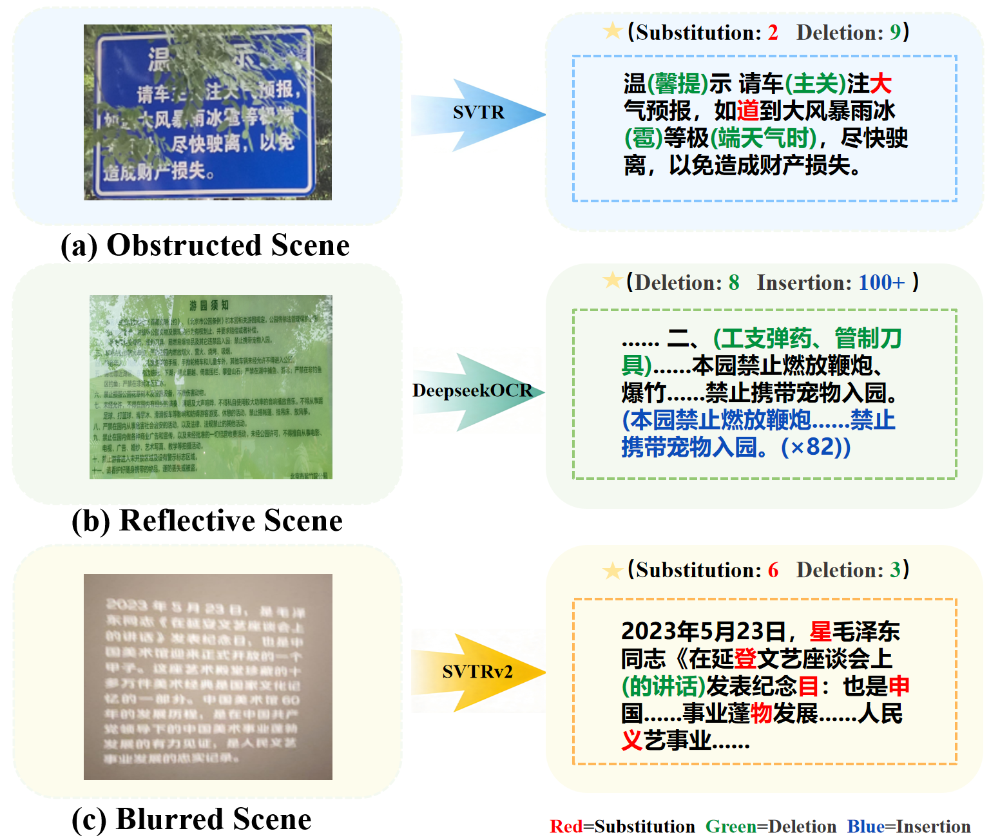
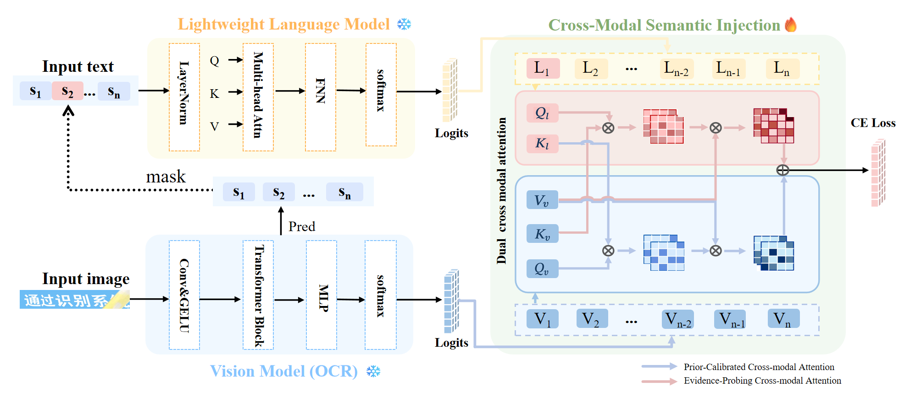
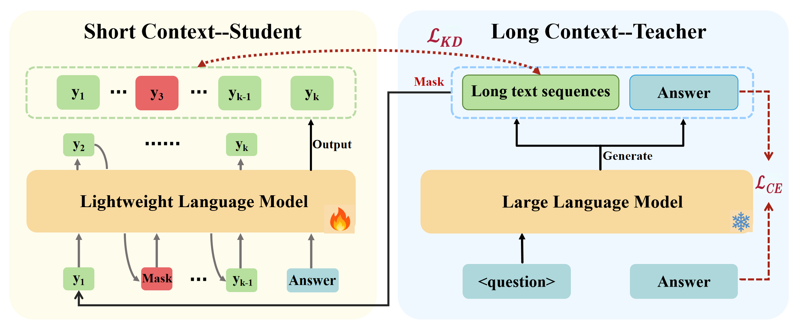

1. Abstract
Robust recognition of long Chinese text in the wild is fundamentally challenged by the dual shortcomings of vision-centric models: their susceptibility to visual distribution shifts (e.g., occlusion, blur) and their inherent inability to perform long-range contextual reasoning. To bridge this gap, we propose the Context-aware Chinese Text Recognition framework (CCTR), which embodies a "Seeing with Understanding" paradigm. Specifically, CCTR first distills long‑text reasoning from a large language model into a lightweight language model, and then injects the distilled semantic context into the vision module through dual cross‑modal attention mechanism. This injection dynamically calibrates visual perception with linguistic constraints at the distribution level, thereby steering the final logits from perception-driven to cognition-refined. This design confers two critical advantages: (1) it substantially enhances robustness against visual ambiguity by distilling long-text context from LLM to guide visual perception; (2) it effectively mitigates hallucination risks through a vision-prioritized cross-modal attention mechanism to ensure fidelity. To facilitate evaluation, we collect and curate Chinese Long Text in the Wild (CLTW), the first dataset dedicated to long Chinese text recognition in unconstrained scenarios. Extensive experiments demonstrate that CCTR outperforms existing methods on both standard benchmarks and the challenging CLTW dataset, validating the effectiveness of distilled context injection.
2. Problem Defination
- (Introduction)Long text character recognition poses greater challenges than short text due to increased blur, or occlusion as illustrated in Figure 1, yet most existing methods lack effective contextual modeling to fully leverage its rich semantics. This paper propose a context-aware Chinese text recognition framework (CCTR) by leveraging vision-language across attention and distilled an Large Language Model to enhance Chinese linguistic modeling.

3.Illustration of Our Framework
CCTR consists of three main components: a visual recognition module (CTC-based vision model), a language modeling module (pretrained language model) and a cross-modal semantic injection module. The vision model produces character-level prediction probability distributions, while the language model provides contextual priors. The semantic information is injected into the visual predictions via a dual cross-modal attention mechanism to generate the final prediction. Our framework can be illustrated in Figure 3.

4. Method
- (Context-Aware Semantic Distillation) We present a knowledge distillation strategy that uses DeepSeek-R1-Distill- Qwen-32B as the teacher model to train a student model(Lightweight Language model).
- (Cross-Modal Semantic Injection) The Cross-Modal Semantic Injection (CMSI) module integrates the distilled long-range semantic logits into the visual recognition pipeline. It consists of two cross-model attention mechanisms operating at the logit level to achieve a mutually grounding fusion of vision and semantics. he cross-modal semantic injection is for- mulated as follows: $$ \text{Attn} =(\text{Attn}_{ep}+\text{Attn}_{pc}) /2, $$ where $$ \text{Attn}_{ep} = \text{Softmax}\left( \frac{\mathbf{Q}_l \mathbf{K}_v^\top}{\sqrt{d_k}}\right)\mathbf{V}_v, $$ $$ \text{Attn}_{pc} = \text{Softmax}\left( \frac{\mathbf{Q}_v \mathbf{K}_l^\top}{\sqrt{d_k}}\right)\mathbf{V}_v. $$

4. Experiments
- (Datasets) We evaluate CCTR on two datasets with long text: the Chinese Long Text in the Wild (CLTW) and the Handwritten Chinese Text dataset(HW). For CLTW, an $8:2$ split is adopted for training and testing. Then, the models are tested on both CLTW and HW, including fourteen challenging subsets. To facilitate comparisons with LLM-based methods, we curate two specialized subsets from the CLTW data: an Over-confidence (OCF) set of 199 images and a Hallucination (HAL) set of 467 images. These subsets collectively account for approximately 10\% of the total data.
-
(Evaluation Index)
We evaluate model performance using six key metrics. Line-level metrics: Accuracy (Acc), Accuracy Rate (AR), Character Rate(CR), and their corresponding page-level metrics: Accuracy* (Acc*), Accuracy Rate* (AR*), Character Rate*(CR*)
Accuracy (Acc) measures the proportion of predictions that exactly match the ground-truth text.
CR : measures the proportion of correctly recognized characters, considering only deletions and substitutions.
AR: measures the proportion of correctly recognized characters while also accounting for insertion errors, providing a stricter evaluation of character-level recognition performance.
-
(Evalutions of CCTR) We reports line-level Accuracy (ACC) for baseline method and our model across the nine CLTW subsets and hw dataset as shown in Table 1.

-
(Comparison with Large Model API Methods and LLM-based OCR Methods.) We compare CCTR with Large Model API methods and LLM-based OCR methods using SVTRv2 as the backbone, as shown in Table 2. Evaluation is based on AR* and CR*.

-
(Ablation Study)we conduct ablation analyses to
validate the effectiveness of CCTR’s key components. We eval-
uate the flexibility of the vision module by replacing the backbone
and ablating the fusion module (CMSI). We also present Context-Aware Semantic Distillation is advantageous.

Table 4: Ablation study of CCTR and CMSI. 
Table 5: Performance comparison of language models under different masking ratios using Top-1 accuracy.
5. Contribution
- We propose CCTR, a novel framework that bridges visual recognition and semantic reasoning. Instead of direct feature fusion, CCTR exploits semantic context in the logit space, fundamentally enhancing robustness against visual ambiguities and the failure to capture long-range dependencies.
- To tackle real-world visual degradations, CCTR introduces a distilled semantic injection strategy that distills LLM’s long-range reasoning into a lightweight student, and leverages cross-modal attention to balance semantics and vision, resolving visual uncertainties while preventing semantic hallucinations.
- We introduce CLTW, the first large-scale dataset dedicated to long Chinese text recognition in the wild. Extensive experiments on the challenging CLTW dataset demonstrate that CCTR achieves state-of-the-art performance, particularly excelling in severely degraded or long-text scenarios.
6. Code
Appendix and code contains the relevant code required for the paper experiment in Supplementary Materials.